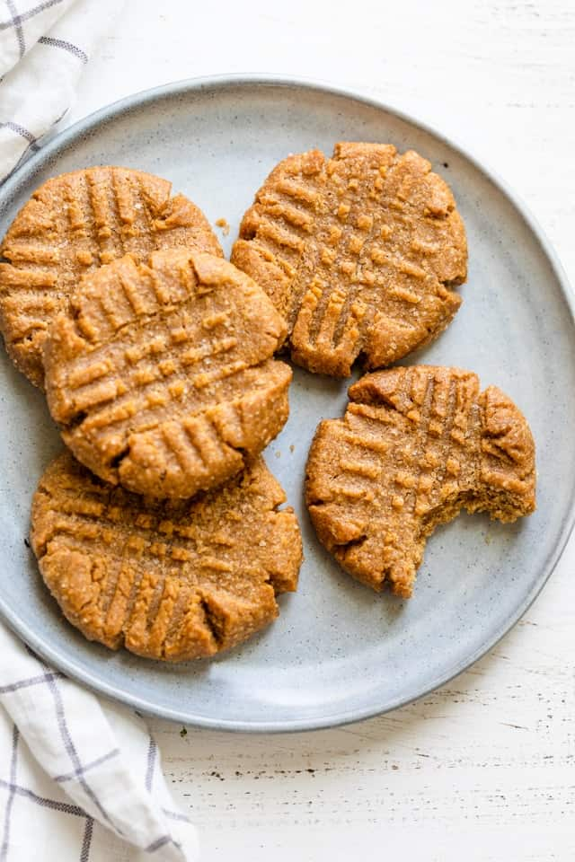

3-Ingredient Peanutbutter Cookies.

3-Ingredient Peanutbutter Cookies.
Have you ever wanted cookies but was short on supplies and time? Than this is the recipie for you! It's fast, easy, and irrisistable peanutbutter cookies!
Ingredients
- One Cup of Peanutbutter
- One cup of White Sugar
- One Egg
Steps
- Preheat oven to 350 degrees F (175 degrees C).
- Mix peanut butter, sugar, and egg together in a bowl using an electric mixer until smooth and creamy. Roll mixture into small balls and arrange on a baking sheet; flatten each with a fork, making a criss-cross pattern.
- Bake in the preheated oven for 10 minutes. Cool cookies on the baking sheet for 2 minutes before moving to a plate.